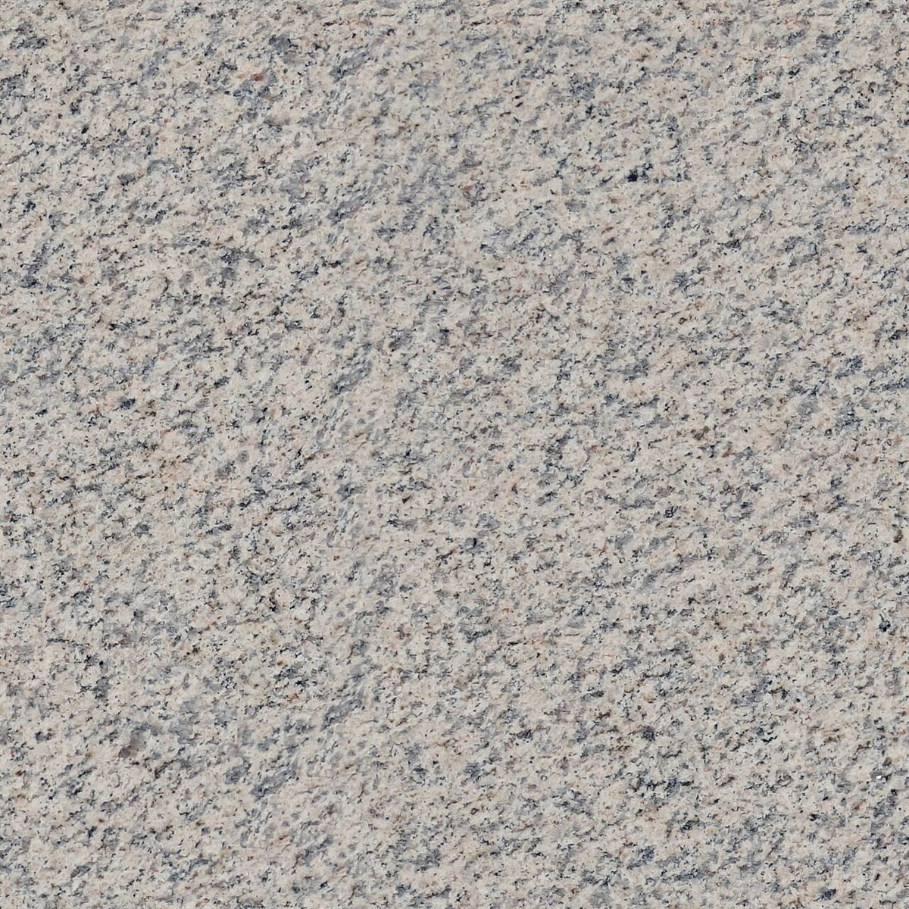
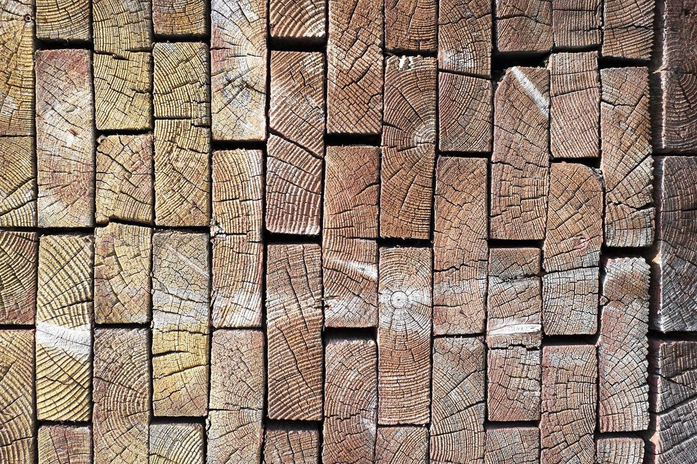

制作側の連想です
店名の由来は分かりません。制作側は「tubu」を「tu」と「bu」の二つに分けて眺めてみました。フランス語の活用表には「tu as bu」(bu は boire=飲む の過去分詞)という並びがあります。ただそれだけの言葉遊びで、制作側の連想で、お店の理念・由来とは無関係です。そこでこのサイトは、フランスの学校ノートの罫線(セイエス罫線)に見立てた作りにしました。
Conjugaison
「tu」と「bu」に赤丸をつける
| 主語 | avoir | 過去分詞 |
|---|---|---|
| je | ai | bu |
| tu | as | bu |
| il / elle | a | bu |
| nous | avons | bu |
| vous | avez | bu |
| ils / elles | ont | bu |
ノートの活用表(boire の複合過去)です。cafe tubu の「tu」と「bu」が同じ行に並ぶ、という見立てだけをお借りしました。
お店の綴りや意味についての説明ではありません。
Exemples
ひと粒ずつ並べてみる
「tubu」から日本語の「粒(つぶ)」も連想して、粒や粉、小さなものの質感の写真を選びました。国外・撮影地不明のフリー素材で、お店の写真や、お店で扱う品を示すものではありません。





Informations
お店のこと(確認できたものだけ)
| 所在地 | 〒405-0042 山梨県山梨市南１４００−１ |
|---|---|
| 電話 | 0553-31-9504 |
| 営業時間 | 準備中 |
| 定休日 | 準備中 |
| ご予約 | 準備中 |
| 駐車場 | 準備中 |
| SNS | Instagram @tubu_shop |